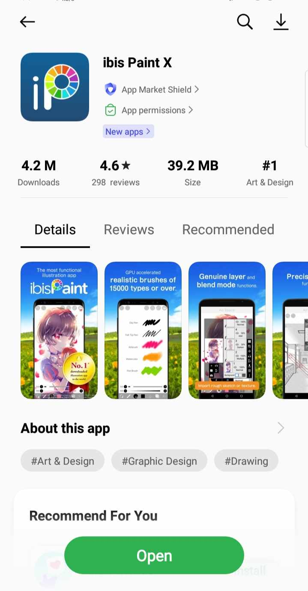
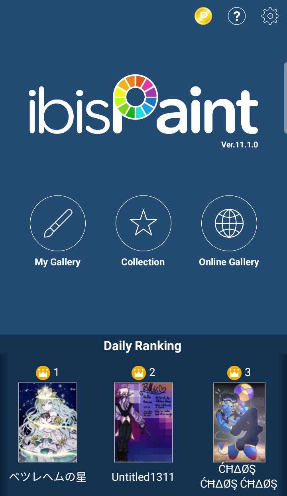
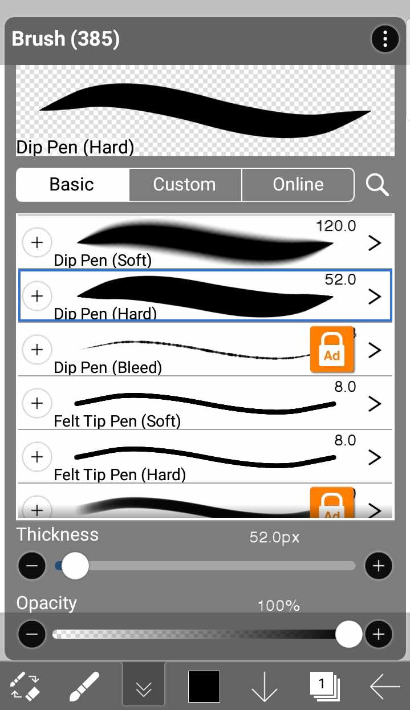
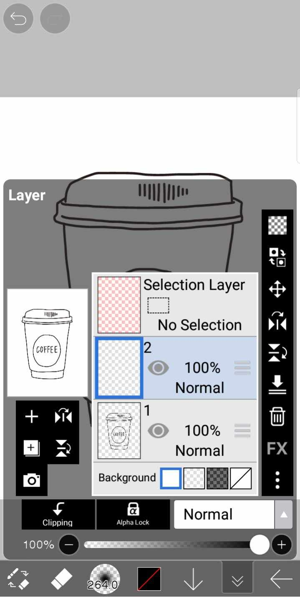
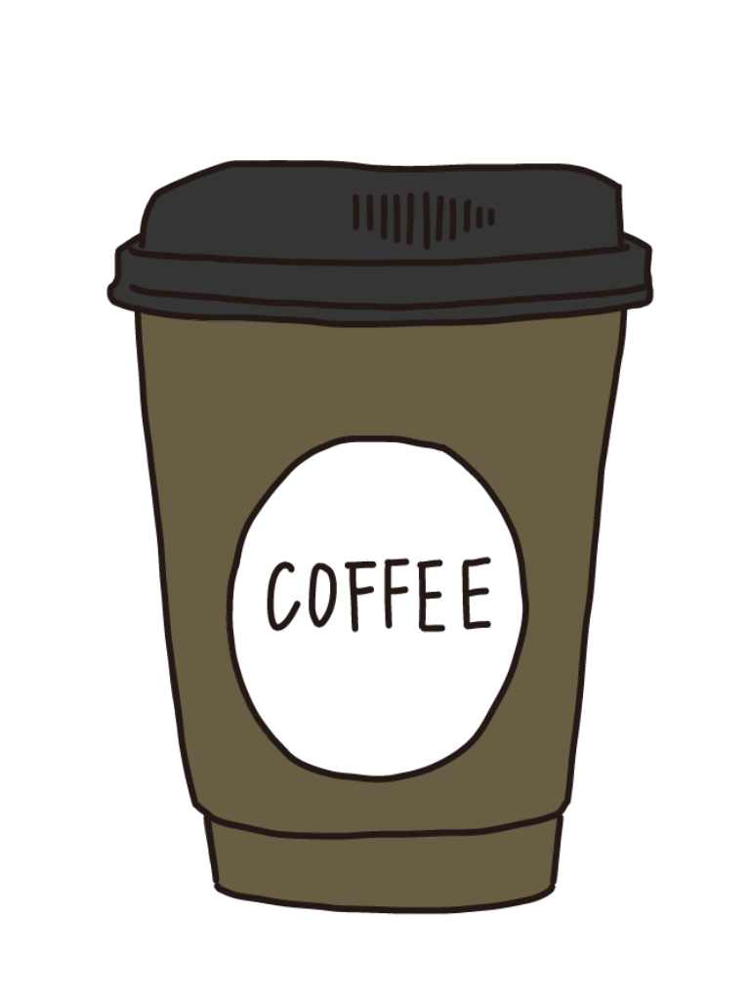
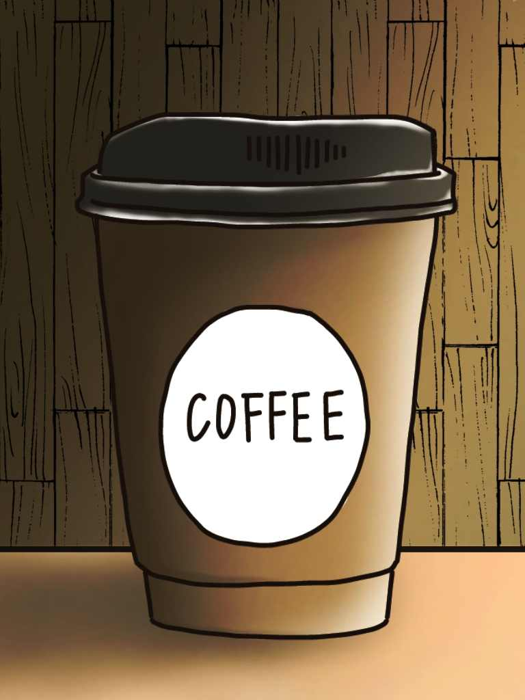

MY BLOG
Creating Digital Art on your phone using IbisPaintX
Welcome to the world of digital arts! In this tutorial, we'll explore the basic steps to create your artwork using IbisPaint X and your phone. Let's go!
Step 1: Download and Install IbisPaint X
If you don't have this app yet, download and install IbisPaintX from your play store or app store.

Step 2: Setting Up Your Canvas
Open the app and click "My Gallery".

At the bottom, click the "+" sign to create a new canvas.
Choose the canvas size and orientation that suits your project. Here I choose the size 3:4 (SD)
You can now start sketching!
Step 3: Start Sketching
Select a brush and begin sketching. As you can see, you can watch ads if you want to use some other brushes and you'll be able to use it for 18 hours.

Now you can start sketching what's on your mind! I got here a simple drawing of a coffee cup.
Step 4: Coloring
Create a new layer for your base colors.

Use the bucket tool to fill in the base colors.
Step 5: Shading and Highlights
Add a new layer for shading and highlights above your base color layers. Experiment with different brushes and opacities for shading.

Step 6: Finalize
Put additional features such as textures, filters, or backgrounds that will suit your taste. Once satisfied, save your artwork.

Tips
1.) Exploring brushes is a must. IbisPaintX have lots of brushes that you can use. You can watch ads to have access of all brushes for 18 hours. Experiment with them to find the ones that suit your style.
2.) Be friends with layers, it can help you in a lot of ways and also allows you to make changes in your work without affecting your entire art.
3.) Take a break if you find yourself getting stuck. It helps maintain a fresh perspective.
4.) Practice more to be familiar with the application.